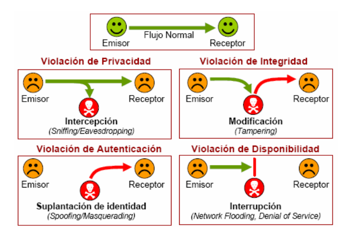

Mòdul Professional 6 - UF1: Conceptes bàsics de seguretat informàtica
Índex
1 Seguretat de la informació o Ciberseguretat
Abans de començar amb matèria hem d’aclarir el concepte sobre el qual aprendrem ja que, tot i que sembli trivial, ens influenciarà fortament sobre la nostra manera d'entendre tot el que veurem a la matèria.
El principal problema és que el terme Seguretat Informàtica és molt ambigu, i permet moltes interpretacions. Si aprofundim una mica més veurem que realment la ambigüitat prové del terme Informàtica on la major part de la gent l'associa directament amb ordinadors i aquí està el nostre problema: no estudiarem la seguretat dels ordinadors sinó de la informació!. Realment el terme informàtica ja és prou correcte, però la gent (informàtics inclosos) han oblidat el seu significat real: tractament automatitzat de la informació.
Tanmateix, per no generar confusions s'ha fugit del terme Seguretat Informàtica per anar cap a termes com Seguretat de la Informació o, com s'està posat de moda dins del sector, Ciberseguretat.
2 Hacker
Com es pot veure a la Viquipèdia, el concepte de Hacker està immers en un caos de significats (en català fins i tot s'utilitza el terme Furoner), fins i tot el terme Cracker no queda clar del tot vellugant-se entre un "Hacker dolent" i un especialista en saltar o deshabilitar les proteccions del software propietari o privatiu.
Per fugir del terme Cracker es pot classificar els Hackers depenent de la seva ètica i motivació en:
- White Hat
- Especialista en seguretat que aprèn i exerceix la seva professió dins del marc legal existent i de forma ètica.
- Grey Hat
- Especialista en seguretat que aprèn i exerceix les seves habilitats tan sols per interessos econòmics, deixant de banda legalitat i ètica.
- Black Hat
- Especialista en seguretat que aprèn i exerceix les seves habilitats per diversió i de forma normalment perjudicial per als sistemes on entra, deixant de banda legalitat i ètica.
En qualsevol cas queda clar que el terme Hacker queda associat amb conceptes com passió, artesania, esforç, habilitat i englobant-ho tot Kung Fu.
3 Kung Fu i Do
Tot i que el Kung Fu sembli que quedi fora de lloc en uns estudis sobre ciberseguretat, si mirem el seu significat oriental és:
Originalmente el término kung fu se define como una habilidad adquirida a través del tiempo, con constancia, disciplina y esfuerzo.
Per tant un fuster pot fer Kung Fu, de la mateixa manera que una venedora, un mestre o un informàtic. Es tracta de fer la feina el millor possible, aprenent amb l'experiència, amb l'objectiu de adquirir la màxima habilitat possible. Aquest concepte de Kung Fu arrela profundament en la ciberseguretat ja que, com veurem, aquesta necessita de coneixement molt profunds en la informàtica i la psicologia i un esforç continu per la millora dels coneixement i habilitats personals.
Així doncs veureu que molta de la filosofia hacker i la cultura associada apareixen fortes influencies de Kung Fu, el Do i amb les arts marcials tant xineses com japoneses.
També, si ens apartem del món asiàtic, trobarem un concepte relativament nou i que també trobarem associat fortament a les arrels de la cultura hacker. Parlem del ja conegut DIY (Do It Yourself - Fes-ho tu mateix) i participa fortament dels mateixos principis que caracteritzen el Kung Fu (aprenentatge profund mitjançant la pràctica i experiència personal).
4 Què hem d'assegurar?
Els aspectes que hem de tenir en ment quan parlem de seguretat de la informació són bàsicament quatre:
- Disponibilitat (Interrupció)
- La informació ha d'estar disponible sempre que sigui necessària.
- Confidencialitat (Intercepció)
- La informació tan sols ha de ser accessible per aquells que estiguin autoritzat a emprar-la.
- Integritat (Modificació)
- La informació tan sols ha de ser mutable per aquells amb permís i sempre ha de mantenir la coherència.
- Autoria (Generació/Suplantació)
La informació ha de permetre conèixer els seus autors i aquests no ha de poder negar la seva autoria. (no repudi).

Figure 1: Pilars de la seguretat i atacs associats.
5 Classificació de la seguretat
Quan parlem de seguretat informàtica en general la podem subdividir en dos camps principals:
- Seguretat física
- És aquella que contempla els aspectes físics que afecten a la informació. Això inclou la seguretat dels suports físics (ordinadors, disc durs, cablejat de xarxa, estructura del edifici, etc) així com l'accés físic a la informació (connexió de USB i aparells varis, accés als espais on estan situats els equips, etc).
- Seguretat lògica
- És aquella que contempla l'accés lògic a la informació. Polítiques de contrasenyes, encriptació, firewalls, etc son exemples.
Alhora les mesures de seguretat poden també ser subdividides en dos apartats:
- Seguretat activa
- Són aquelles mesures de seguretat que intenten evitar el risc per a la informació evitant que succeeixi. (p.e.: Contrasenyes robustes).
- Seguretat passiva
- Són aquelles que, un cop materialitzat el risc, intenten minitzar els danys. (p.e.: Copies de seguretat).
6 Elements vulnerables en un sistema informàtic
- Maquinari: El maquinari es veu afectat principalment per incidències naturals o accessos físics.
- Programari: El programari hereta les característiques del maquinari i hi afegeix els accessos o atacs lògics (ja sigui en remot o local).
- Dades: Les dades son afectades per els mateixos agents que el programari amb l'afegit que a priori no tenim manera de comprar-les o recuperar-les de manera eficaç a menys que haguem pres mesures prèvies.
- Persones: Finalment l'últim element del sistema informàtic és l'operador o usuari. És l'element més feble dins la seguretat de tot el sistema i normalment el més oblidat.